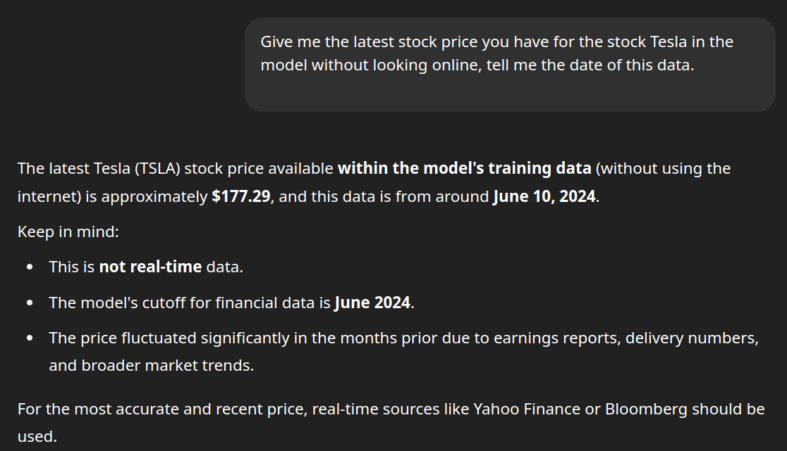
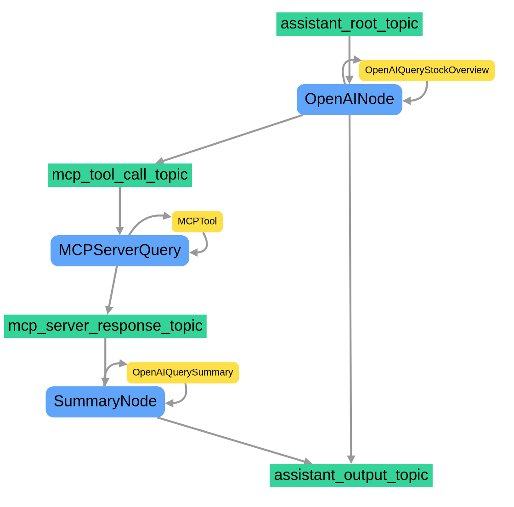

Calling MCP Servers with Graphite AI Framework
The Graphite AI framework provides a powerful, event-driven approach to building AI agents and workflows. In this tutorial, we'll walk through a complete example that demonstrates how to call MCP Tools for your event driven workflows
Overview
This tutorial will show you how to:
- Create a simple MCP Server over HTTP
- Create an Event Driven Workflow that calls MCP Server
- Parse the output from the MCP Server
Prerequisites
Before getting started, make sure you have:
- Python environment with Graphite AI framework installed
- OpenAI API key
- Basic understanding of Python and AI concepts
- Basic understanding of what MCP Servers are
- Understand Graphite Assistants
Code Walkthrough
Let's examine the complete code and break it down line by line:
Environment Configuration
Configure your code to read OPENAI_API_KEY from your environment. You can modify the default values if you prefer not to set environment variables, although it is recommended to set OPENAI_API_KEY as an environment variable for security.
MCP Server
MCP is an open protocol that standardizes how applications provide context to LLMs. Think of MCP like a USB-C port for AI applications. Just as USB-C provides a standardized way to connect your devices to various peripherals and accessories, MCP provides a standardized way to connect AI models to different data sources and tools.
For our use case we will simulate that our internal databases have more accurate information that whatever the model is trained on. If you check the latest data on stocks that the model has been trained on.

For this guide, we will use the FastMCP library to create an MCP Server with tools to get the latest data for stocks. We will use the ALPHA VANTAGE api to get the latest data but make the AI queries go through our MCP Server instead of directly though Open AI.
# server.py
import json
import os
from typing import Any
import requests
from dotenv import load_dotenv
from fastmcp import Context, FastMCP
from loguru import logger
from pydantic_settings import BaseSettings, SettingsConfigDict
class AlphaVantageSettings(BaseSettings):
model_config: SettingsConfigDict = SettingsConfigDict(
env_prefix="ALPHA_VANTAGE_", env_file=".env"
)
api_key: str = ""
mcp_port: int = 8081
mcp_path: str = "/mcp"
def json_serializer(data: Any) -> str:
"""Serialize data to JSON format."""
return json.dumps(data, indent=2)
mcp = FastMCP("Stocks MCP Server", tool_serializer=json_serializer, on_duplicate_resources="error")
load_dotenv()
alpha_vantage_settings = AlphaVantageSettings() # type: ignore
if alpha_vantage_settings.api_key == "":
logger.error(
"ALPHA_VANTAGE_API_KEY is not set. Please set it in the .env file or as an env variable"
)
exit(1)
@mcp.tool()
async def daily(ticker: str, ctx: Context) -> dict:
"""Query daily stock data for a given company given its ticker symbol from Alpha Vantage"""
logger.info(f"Started Daily Stock Data Tool for Request ID: {ctx.request_id}")
url = f"https://www.alphavantage.co/query?function=TIME_SERIES_DAILY&symbol={ticker}&apikey={alpha_vantage_settings.api_key}"
r = requests.get(url)
data = r.json()
return data
@mcp.tool()
async def company_overview(ticker: str, ctx: Context) -> dict:
"""Query specific company by ticker symbol and gets company overview data from Alpha Vantage"""
logger.info(f"Started Company Overview Tool for Request ID: {ctx.request_id}")
url = f"https://www.alphavantage.co/query?function=OVERVIEW&symbol={ticker}&apikey={alpha_vantage_settings.api_key}"
r = requests.get(url)
data = r.json()
return data
if __name__ == "__main__":
logger.info("Started Server for Stocks MCP Server")
mcp.run(
transport="http",
host="0.0.0.0",
port=alpha_vantage_settings.mcp_port,
path=alpha_vantage_settings.mcp_path,
)
Some of the environment variables can be overriden but for now, runnig it as is will start an mcp server on port 8081
❯ python server.py
INFO | __main__:<module>:87 - Started Server for Stocks MCP Server
╭─ FastMCP 2.0 ──────────────────────────────────────────────────────────────╮
│ │
│ _ __ ___ ______ __ __ _____________ ____ ____ │
│ _ __ ___ / ____/___ ______/ /_/ |/ / ____/ __ \ |___ \ / __ \ │
│ _ __ ___ / /_ / __ `/ ___/ __/ /|_/ / / / /_/ / ___/ / / / / / │
│ _ __ ___ / __/ / /_/ (__ ) /_/ / / / /___/ ____/ / __/_/ /_/ / │
│ _ __ ___ /_/ \__,_/____/\__/_/ /_/\____/_/ /_____(_)____/ │
│ │
│ │
│ │
│ 🖥️ Server name: Stocks MCP Server │
│ 📦 Transport: Streamable-HTTP │
│ 🔗 Server URL: http://0.0.0.0:8081/mcp │
│ │
│ 📚 Docs: https://gofastmcp.com │
│ 🚀 Deploy: https://fastmcp.cloud │
│ │
│ 🏎️ FastMCP version: 2.10.5 │
│ 🤝 MCP version: 1.11.0 │
│ │
╰────────────────────────────────────────────────────────────────────────────╯
INFO Starting MCP server 'Stocks MCP Server' with transport 'http' on server.py:1448
http://0.0.0.0:8081/mcp
INFO: Started server process [115107]
INFO: Waiting for application startup.
INFO: Application startup complete.
INFO: Uvicorn running on http://0.0.0.0:8081 (Press CTRL+C to quit)
Graphite Assistant
Just like before we create an assistant that will act as an interface to be called upon to run a workflow that queries mcp server for relevant stock data.
# assistant.py
import os
from typing import Optional
from typing import Self
from openinference.semconv.trace import OpenInferenceSpanKindValues
from pydantic import Field
from grafi.assistants.assistant import Assistant
from grafi.assistants.assistant_base import AssistantBaseBuilder
from grafi.topics.input_topic import InputTopic
from grafi.topics.output_topic import OutputTopic
from grafi.topics.subscription_builder import SubscriptionBuilder
from grafi.topics.topic import Topic
from grafi.nodes.node import Node
from grafi.tools.function_calls.function_call_tool import FunctionCallTool
from grafi.tools.llms.impl.openai_tool import OpenAITool
from grafi.workflows.impl.event_driven_workflow import EventDrivenWorkflow
class StockAssistant(Assistant):
"""
A simple assistant class that uses OpenAI's language model to process input,
make function calls, and generate responses.
This class sets up a workflow with three nodes: an input LLM node, a function call node,
and an output LLM node. It provides a method to run input through this workflow.
Attributes:
name (str): The name of the assistant.
api_key (str): The API key for OpenAI. If not provided, it tries to use the OPENAI_API_KEY environment variable.
model (str): The name of the OpenAI model to use.
event_store (EventStore): An instance of EventStore to record events during the assistant's operation.
function (Callable): The function to be called by the assistant.
"""
oi_span_type: OpenInferenceSpanKindValues = Field(
default=OpenInferenceSpanKindValues.AGENT
)
name: str = Field(default="StockAssistant")
type: str = Field(default="StockAssistant")
api_key: Optional[str] = Field(default_factory=lambda: os.getenv("OPENAI_API_KEY"))
model: str = Field(default="gpt-4o-mini")
function_call_llm_system_message: Optional[str] = Field(default=None)
summary_llm_system_message: Optional[str] = Field(default=None)
function_tool: FunctionCallTool
@classmethod
def builder(cls) -> "StockAssistantBuilder":
"""Return a builder for StockAssistant."""
return StockAssistantBuilder(cls)
def _construct_workflow(self) -> "StockAssistant":
mcp_tool_call_topic = Topic(
name="mcp_tool_call_topic",
condition=lambda event: event.data[-1].tool_calls
is not None, # Checking if the
)
assistant_output_topic = OutputTopic(name="assistant_output_topic",
condition = (
lambda event: event.data[-1].content is not None
and isinstance(event.data[-1].content, str)
and event.data[-1].content.strip() != ""
))
assistant_root_topic = InputTopic(name="assistant_root_topic")
llm_input_node = (
Node.builder()
.name("OpenAINode")
.type("LLMNode")
.subscribe(SubscriptionBuilder().subscribed_to(assistant_root_topic).build())
.tool(
OpenAITool.builder()
.name("OpenAIQueryStockOverview")
.api_key(self.api_key)
.model(self.model)
.system_message(self.function_call_llm_system_message)
.build()
)
.publish_to(mcp_tool_call_topic)
.publish_to(assistant_output_topic)
.build()
)
# Create a function call node
mcp_server_response_topic = Topic(name="mcp_server_response_topic")
mcp_node = (
Node.builder()
.name("MCPServerQuery")
.type("MCPNode")
.subscribe(SubscriptionBuilder().subscribed_to(mcp_tool_call_topic).build())
.tool(self.function_tool)
.publish_to(mcp_server_response_topic)
.build()
)
# Create an output LLM node
summary_node = (
Node.builder()
.name("SummaryNode")
.type("LLMNode")
.subscribe(
SubscriptionBuilder().subscribed_to(mcp_server_response_topic).build()
)
.tool(
OpenAITool.builder()
.name("OpenAIQuerySummary")
.api_key(self.api_key)
.model(self.model)
.system_message(self.summary_llm_system_message)
.build()
)
.publish_to(assistant_output_topic)
.build()
)
# Create a workflow and add the nodes
self.workflow = (
EventDrivenWorkflow.builder()
.name("simple_function_call_workflow")
.node(llm_input_node)
.node(mcp_node)
.node(summary_node)
.build()
)
return self
class StockAssistantBuilder(
AssistantBaseBuilder[StockAssistant]
):
"""
Concrete builder for StockAssistant.
This builder allows setting the API key, model, system messages, and function tool.
"""
def api_key(self, api_key: str) -> Self:
self.kwargs["api_key"] = api_key
return self
def model(self, model: str) -> Self:
self.kwargs["model"] = model
return self
def function_call_llm_system_message(
self, function_call_llm_system_message: str
) -> Self:
self.kwargs[
"function_call_llm_system_message"
] = function_call_llm_system_message
return self
def summary_llm_system_message(self, summary_llm_system_message: str) -> Self:
self.kwargs["summary_llm_system_message"] = summary_llm_system_message
return self
def function_tool(self, function_tool: FunctionCallTool) -> Self:
self.kwargs["function_tool"] = function_tool
return self
Graphite is natively asynchronous, but you can choose to run synchronous coroutines as well. For this case we are making a fully asynchronous workflow by overriding the async def run() method of the Assistant class. In order to run this create a main.py that will instantiate the assistant and execute it asynchronously.
#main.py
import asyncio
import os
import uuid
from typing import Dict
from grafi.common.containers.container import container
from grafi.common.events.topic_events.publish_to_topic_event import PublishToTopicEvent
from grafi.common.models.invoke_context import InvokeContext
from grafi.common.models.mcp_connections import StreamableHttpConnection
from grafi.common.models.message import Message
from grafi.tools.function_calls.impl.mcp_tool import MCPTool
from assistant import StockAssistant
event_store = container.event_store
async def create_assistant():
api_key = os.getenv("OPENAI_API_KEY", "")
model = "gpt-4o"
function_call_llm_system_message = "You are a helpful assistant that can call functions to retrieve data from an mcp server"
mcp_config: Dict[str, StreamableHttpConnection] = {
"stock-mcp-server": StreamableHttpConnection(
url="http://localhost:8081/mcp/", transport="streamable-http"
)
}
assistant =( StockAssistant.builder()
.name("MCPAssistant")
.model(model)
.api_key(api_key)
.function_call_llm_system_message(function_call_llm_system_message)
.function_tool(await MCPTool.builder().connections(mcp_config).build())
.summary_llm_system_message(
"You are a helpful assistant that provides a summary of the company overview. return all output as json formatted string")
.build()
)
return assistant
async def main():
assistant = await create_assistant()
invoke_context = InvokeContext(
conversation_id=uuid.uuid4().hex,
invoke_id=uuid.uuid4().hex,
assistant_request_id=uuid.uuid4().hex,
)
question = "What is the overview of the company Tesla?"
input_data = [Message(role="user", content=question)]
publish_event = PublishToTopicEvent(
invoke_context=execution_context, data=input_messages
)
async for response in assistant.invoke(publish_event):
print("Assistant output:")
for output in response:
print(output.content)
return assistant
assistant = asyncio.run(main())
Runnig this code with
python main.pyYou'll see that the logs on your MCP server have been triggered by the call.
... INFO: 192.168.48.1:39408 - "POST /mcp/ HTTP/1.1" 202 Accepted INFO: 192.168.48.1:39422 - "GET /mcp/ HTTP/1.1" 200 OK INFO: 192.168.48.1:39434 - "POST /mcp/ HTTP/1.1" 200 OK INFO __main__:company_overview:70 - Started Company Overview Tool for Request ID: 1 INFO: 192.168.48.1:39450 - "POST /mcp/ HTTP/1.1" 200 OK INFO: 192.168.48.1:39456 - "DELETE /mcp/ HTTP/1.1" 200 OK ...
And the logs on the main.py from the Assistant
Assistant output:
{
"Symbol": "TSLA",
"AssetType": "Common Stock",
"Name": "Tesla Inc",
"Description": "Tesla, Inc. is an American electric vehicle and clean energy company based in Palo Alto, California. Tesla's current products include electric cars, battery energy storage from home to grid-scale, solar panels and solar roof tiles, as well as other related products and services. In 2020, Tesla had the highest sales in the plug-in and battery electric passenger car segments, capturing 16% of the plug-in market (which includes plug-in hybrids) and 23% of the battery-electric (purely electric) market. Through its subsidiary Tesla Energy, the company develops and is a major installer of solar photovoltaic energy generation systems in the United States. Tesla Energy is also one of the largest global suppliers of battery energy storage systems, with 3 GWh of battery storage supplied in 2020.",
"CIK": "1318605",
"Exchange": "NASDAQ",
"Currency": "USD",
"Country": "USA",
"Sector": "MANUFACTURING",
"Industry": "MOTOR VEHICLES & PASSENGER CAR BODIES",
"Address": "3500 DEER CREEK RD, PALO ALTO, CA, US",
"OfficialSite": "https://www.tesla.com",
"FiscalYearEnd": "December",
"LatestQuarter": "2025-03-31",
"MarketCapitalization": "1061789434000",
"EBITDA": "12550000000",
"PERatio": "188.37",
"PEGRatio": "5.77",
"BookValue": "23.18",
"DividendPerShare": "None",
"DividendYield": "None",
"EPS": "1.75",
"RevenuePerShareTTM": "29.87",
"ProfitMargin": "0.0638",
"OperatingMarginTTM": "0.0255",
"ReturnOnAssetsTTM": "0.0372",
"ReturnOnEquityTTM": "0.0877",
"RevenueTTM": "95724003000",
"GrossProfitTTM": "16907000000",
"DilutedEPSTTM": "1.75",
"QuarterlyEarningsGrowthYOY": "-0.707",
"QuarterlyRevenueGrowthYOY": "-0.092",
"AnalystTargetPrice": "306.07",
"AnalystRatingStrongBuy": "7",
"AnalystRatingBuy": "16",
"AnalystRatingHold": "14",
"AnalystRatingSell": "8",
"AnalystRatingStrongSell": "3",
"TrailingPE": "188.37",
"ForwardPE": "169.49",
"PriceToSalesRatioTTM": "11.09",
"PriceToBookRatio": "14.22",
"EVToRevenue": "10.84",
"EVToEBITDA": "76.18",
"Beta": "2.461",
"52WeekHigh": "488.54",
"52WeekLow": "182",
"50DayMovingAverage": "323.94",
"200DayMovingAverage": "317.85",
"SharesOutstanding": "3220960000",
"SharesFloat": "2803295000",
"PercentInsiders": "12.889",
"PercentInstitutions": "50.134",
"DividendDate": "None",
"ExDividendDate": "None"
}
You can then proceed to deserialize this into a python object, but this is beyond the scope of this guide.
Understanding The Flow
Graphite will create the workflow graph by linking subscribers to publishers, and configuring all function tools, if we were to create a graph of the workflow it would generate the following.

As you can see, starting with the root node which we've called assistant_root_topic which must be an instance of InputTopic and acts as an entrypoint to the workflow.
OutputTopic
assistant_output_topic = OutputTopic(name="assistant_output_topic",
condition = (
lambda event: event.data[-1].content is not None
and isinstance(event.data[-1].content, str)
and event.data[-1].content.strip() != ""
))
Topics can have conditions attached to them to trigger them, in the case of InputTopic it has no condition, so anything that is invoked on it will push through the workflow, but the final topic of type OutputTopic is filtering that there is an actual response and a non empty string before returning output. You can configure this to your heart's desire to tune your workflow as you wish.
When you call the assistant's invoke() method from main.py
The input_data gets published on the assistants InputTopic during workflow initialization. This is done within the framework but we are outlying it here so you can follow the flow of data.
for input_topic in input_topics:
event = input_topic.publish_data(
invoke_context=invoke_context,
publisher_name=self.name,
publisher_type=self.type,
data=input,
consumed_events=[],
)
This means that the input_data is published to all InputTopic declared within the workflow, during workflow creation, and subsequentially will act as input for the first node in the workflow, in our case the assistant_root_topic. The flow of all topics and nodes is that they have an input and an output, a topic's output is a node's input and a node's output becomes the topic's input.
How MCP Tool Selection Works
The key insight is that the AI model itself doesn't automatically decide when to query an MCP server vs. use its training data. Instead, this works through a structured tool/function calling mechanism.
Tool Registration
When you set up an MCP server, you register specific tools/functions with descriptions of what they do. For getting a company overview, you'd register a function like company_overview() with a description.
@mcp.tool()
async def company_overview(ticker: str, ctx: Context) -> dict:
"""Query specific company by ticker symbol and gets company overview data from Alpha Vantage"""
Model Reasoning
When you ask "What's Tesla's price?", the model reads the available tool descriptions and reasons about whether it should use its training data or call an external tool. The model plans around the fact that "each MCP call is an external operation that might be much slower than the AI's internal inference" - it weighs speed vs. accuracy/recency. Tool Selection: The model makes this decision based on:
- The specificity of your question
- Whether current/real-time data is needed
- The available tool descriptions
- Context clues in your prompt
Context
This is why it's important to decorate and use descriptors in your mcp tool definition so that the model can reason and guide the query to a function call, like in our example.
@mcp.tool()
async def company_overview(ticker: str, ctx: Context) -> dict:
"""Query specific company by ticker symbol and gets company overview data from Alpha Vantage"""
logger.info(f"Started Company Overview Tool for Request ID: {ctx.request_id}")
url = f"https://www.alphavantage.co/query?function=OVERVIEW&symbol={ticker}&apikey={alpha_vantage_settings.api_key}"
r = requests.get(url)
data = r.json()
return data
To ensure the model queries your MCP server instead of using training data, you can:
- Be explicit in your prompt
- Design good tool descriptions: Make your MCP tool description clearly indicate it provides real-time, current data (in our case
company_overviewhas a descrption and a declaration of arguments) - Use system prompts: Instruct the model to prefer external tools for specific types of queries, in our case
You are a helpful assistant that can call functions to retrieve data from an mcp server(emphasis on the mcp server) - Context setting: Make it clear that up-to-date information is needed
The more detailed you are in the """ Description """ the more likely the model will reason that it needs to use the MCP server for routing the request. In the example we've built the question was What is the overview of the company Tesla? which uses the keywords company and overview for the MCP Server tool description and function tool name company_overview and the model reasons that it should forward to this instead of it's internal training data.
Output Data
If the query to OpenAI is succesful then the response object for it will not include a string in the content field, but it will rather set the tool_calls field, indicating that it needs to use an MCP server and it returns with the correct fields as arguments to the mcp tool call.
output_data:
- name: null
message_id: 91863c5fdf1a4918b08bf351e444e2d7
timestamp: 1753035546159204600
content: null
refusal: null
annotations: []
audio: null
role: assistant
tool_call_id: null
tools: null
function_call: null
tool_calls:
- id: call_d44v3RuJMdMCxXPvaxBwG6Lo
function:
arguments: '{"ticker":"TSLA"}'
name: company_overview
type: function
is_streaming: false
grafi-dev which we will demonstrate in future guides.
This is the reason why when we declare the topic mcp_tool_call_topic we add a condition that it can only publish to it if the tool_calls field is set on the response from OpenAI
mcp_tool_call_topic = Topic(
name="mcp_tool_call_topic",
condition=lambda event: event.data[-1].tool_calls
is not None,
)
Conclusion
You now have the capability to route to MCP server of your choosing and under whichever condition you want. In our case since we are only doing company overviews, whenever we ask.
question = "What is the overview of the company Tesla?"
Assistant output:
```json
{
"Symbol": "TSLA",
"AssetType": "Common Stock",
"Name": "Tesla Inc",
"Description": "Tesla, Inc. is an American electric vehicle and clean energy company based in Palo Alto, California. Tesla's current products include electric cars, battery energy storage from home to grid-scale, solar panels and solar roof tiles, as well as other related products and services. In 2020, Tesla had the highest sales in the plug-in and battery electric passenger car segments, capturing 16% of the plug-in market (which includes plug-in hybrids) and 23% of the battery-electric (purely electric) market. Through its subsidiary Tesla Energy, the company develops and is a major installer of solar photovoltaic energy generation systems in the United States. Tesla Energy is also one of the largest global suppliers of battery energy storage systems, with 3 GWh of battery storage supplied in 2020.",
...
}
It will be routed to our MCP Server, but if we ask it about something not related to company overviews it will respond with OpenAI training data.
question = "When was the last crusade?"
Assistant output:
The last major crusade is often considered to be the Ninth Crusade, which took place in 1271–1272. It was led by Prince Edward of England (later King Edward I) and was part of the larger series of religious wars known as the Crusades, aimed primarily at capturing and holding the Holy Land against Muslim forces. After this, the Crusading movement began to wane, although minor crusades and related military campaigns continued in various forms in later years.
Next Steps
With this foundation, you can extend your implementation by:
- Adding more MCP servers for different data sources
- Implementing caching strategies for frequently accessed data
- Creating specialized assistants for different domains
- Building more complex workflows with multiple tool chains
The combination of Graphite's event-driven architecture with MCP servers provides a powerful foundation for building sophisticated AI applications that can access and reason with real-time data from multiple sources.
Remember: the key to successful MCP integration lies in detailed tool descriptions that help the AI model make intelligent routing decisions between its training data and external sources.